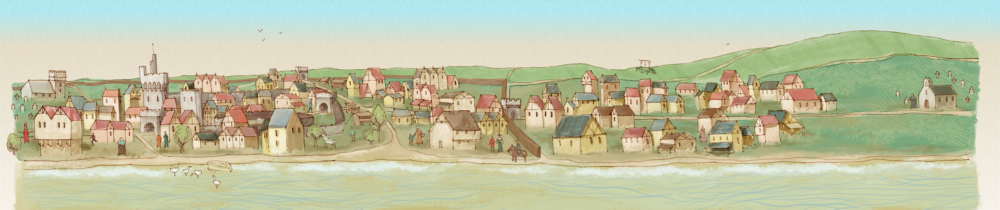

Blog
Meet the ancestors in medieval Swansea!

After the screening of the report on the medieval Swansea project on BBC Wales News last week, I received an email from Steve Davies, who lives near Swansea, and who has been researching the history of his family. Steve has traced his ancestors through a number of gentry families in Glamorgan, right back into the fourteenth century! He has produced a book to share with his family - a tremendous piece of research which brings alive medieval Swansea and the surrounding area through the names and identities of individuals who lived there, as well as through links to family members living today.
Steve has done some very detailed research on the Hopkin family of Danygraig near Swansea (the modern-day Port Tennant area) and kindly shared some of the material with me. A Hopkin David Edwards of Danygraig who died in 1626 was at one time Portreeve of Swansea. His will bequeaths houses to his children in Goat Street, Wind Street and Castle Street.
Steve's 15x great grandfather, David ap Hopkin ap Grifith Gethin, quit a 'burgage in the street of the fishermen' (presumably Fisher Street) in 1422. In 1417 there was a grant by John, Earl Marshall and of Nottingham, Marshal of England, Lord of Mowbray, of Segrave, and of Gower, to Roger Joudrell, of a burgage at Swansea, between the tenements of Thomas Gibbe and Richard Horton, with the ditch of the Castle bailey on the north and the highroad on the south, to which David ap Hopkin was a witness. He is described there as a lieutenant. David’s grandfather, Gruffudd Gethin, was mentioned in Glamorgan charters in 1328 and 1333. He married a daughter of Leisan D’Avene, Lord of Afan (Aberafan).
Just like the story of William Cragh, Steve's painstaking research really adds human detail and colour to the history of Swansea. We've also been able to share some of our project images with Steve for inclusion in his book. We're always pleased for our project research to be used in interesting contexts, so do please get in touch if you would like to draw on the website materials.
Şħȧřḗ ǿƞ Ŧẇīŧŧḗř Şħȧřḗ ǿƞ Ƒȧƈḗƀǿǿķ